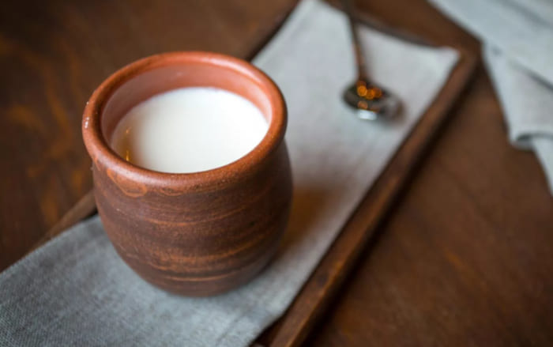

Мацони
Описание
Мацони — это традиционный армянский йогурт из овечьего молока. Отличается нежной текстурой, легкой кислинкой и полезными свойствами.
История
Мацони — неотъемлемая часть армянской кухни, его подают как самостоятельное блюдо или используют в супах и соусах.
Калорийность
В 100 г мацони — примерно 60 ккал.
Рецепт
- Молоко довести до кипения, остудить до 40°C.
- Добавить закваску или немного готового мацони, перемешать.
- Оставить в тепле на 6-8 часов до загустения.